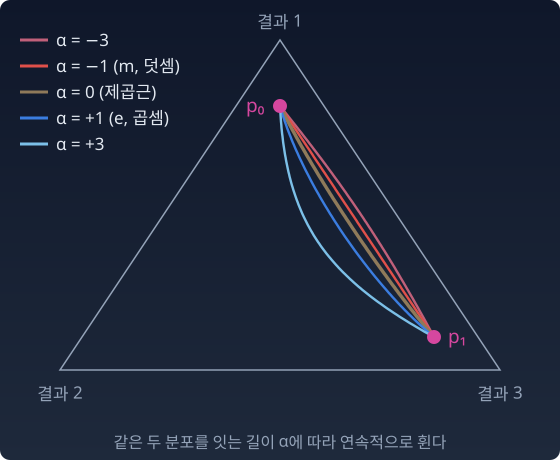
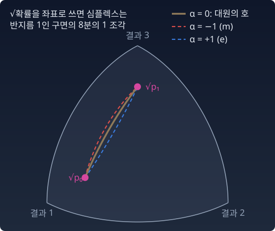

α-접속: 곧음의 규칙은 두 개뿐인가
두 분포를 하나로 섞어야 하는 일은 흔하다. 두 모델의 예측을 합치거나, 두 의견을 하나로 모을 때다. 지금까지 섞는 길은 둘이었다. 확률을 그대로 더하는 덧셈의 길과 로그 확률을 더하는 곱셈의 길. 왜 하필 둘인가. 셋째는 없는가?
두 점 사이의 길을 정하는 규칙을 접속이라 부른다. 자(피셔 계량)는 하나이고, 둘인 것은 「곧음」의 규칙이다.
그런데 곧음의 규칙은 둘뿐이 아니다. 분포를 섞기 전에 먼저 어떤 모양으로 바꿔 두느냐가 길을 정한다. 확률 그대로 섞으면 덧셈의 길이다. 로그를 씌워 섞으면 곱셈의 길이다. 그 사이에 제곱근을 씌워 섞는 길도 있고, 다른 거듭제곱도 있다.
식으로
거듭제곱의 지수를 α로 매긴 표현을 α-표현이라 한다.
α = −1이면 표현이 p 그대로다. 확률을 섞는 덧셈의 길, m-측지선. α = 1이면 표현이 log p다. 로그를 섞는 곱셈의 길, e-측지선. α = 0이면 표현이 2√p다. 제곱근을 섞는 길이다.

가족의 구조
α마다 접속이 하나씩 있다. α-접속이라 부른다. 이 가족에는 세 가지 구조가 있다.
- α와 −α는 피셔 계량에 대해 쌍대 짝이다. 화살표 두 개를 길을 따라 옮길 때, 하나는 α의 규칙으로, 다른 하나는 −α의 규칙으로 옮기면 둘의 피셔 내적(두 화살표의 길이와 사잇각으로 정해지는 값)이 옮기는 내내 변하지 않는다는 뜻이다. 한 규칙만으로는 내적이 지켜지지 않아도, 짝을 지으면 지켜진다. e(+1)와 m(−1)은 그 짝의 하나다. 사영의 피타고라스에서 θ의 차이(e 쪽 좌표)와 η의 차이(m 쪽 좌표)를 곱해 직교를 잰 것이 이 짝이 일하는 모습이다.
- α = ±1인 짝은 특별하다. 지수족 위에서 둘 다 평탄하다. 좌표만 잘 고르면 길이 직선이 된다. 사영이 유일하고 피타고라스가 성립하는 것은 이 평탄함 덕분이다.
- α = 0은 자기 자신과 짝이다. 이것이 피셔 계량의 레비-치비타 접속(길이를 재는 규칙 하나만으로 정해지는 표준 곧음 규칙)이고, 그 측지선이 피셔 거리로 잰 최단 경로다.
심플렉스에서 α = 0의 길은 눈에 보이는 모양이 있다. √p를 좌표로 쓰면 심플렉스는 구면의 한 조각이 된다. 그 위의 최단 경로는 대원(구의 중심을 지나는 원. 지구의 적도나 경선)의 호다. e-측지선도 m-측지선도 최단 경로가 아니다. 각자의 규칙으로 「곧게」 갈 뿐이다.

조금 조심할 곳이 있다. α = ±1과 0에서는 위의 보간이 심플렉스 위의 측지선과 같은 곡선을 그린다. 다른 α에서는 합이 1이 되게 정규화하는 단계 때문에 심플렉스 위의 α-측지선과 정확히 같지는 않다. 여기서는 α가 바뀔 때 길이 어떻게 연속적으로 휘는지만 본다.
무지개 — 연속된 가족의 두 끝
덧셈과 곱셈, 두 연산이 특별한 것은 세 번째가 없어서가 아니다. 길이 곧게 펴지는 좌표가 있다는 것, 평탄하다는 것이 둘을 특별하게 만든다. 무지개에 빨강과 보라만 있는 것이 아니듯, 접속도 연속된 가족이다. 다만 양 끝의 두 색으로만 깨끗한 지도가 그려진다.
불러오는 중…
파이썬
import numpy as np
def alpha_path(p0, p1, a, n=20001):
"""α-보간: α-표현에서 직선으로 섞고 정규화"""
t = np.linspace(0, 1, n)[:, None]
if np.isclose(a, 1):
u = np.exp((1 - t) * np.log(p0) + t * np.log(p1)) # e: 로그에서 직선
else:
b = (1 - a) / 2
u = ((1 - t) * p0**b + t * p1**b)**(1 / b) # α = −1 이면 그냥 혼합
return u / u.sum(axis=1, keepdims=True)
def fisher_length(path): # 피셔 길이 = 2 × (√p 곡선의 유클리드 길이)
s = np.sqrt(path)
return 2 * np.sum(np.linalg.norm(np.diff(s, axis=0), axis=1))
p0 = np.array([0.8, 0.1, 0.1])
p1 = np.array([0.1, 0.1, 0.8])
for a in [-3, -1, 0, 1, 3]:
path = alpha_path(p0, p1, a)
print(f"α={a:+d} 중간점 {np.round(path[len(path) // 2], 3)} 피셔 길이 {fisher_length(path):.4f}")
print(f"대원 호의 길이 2·arccos(Σ√(p0·p1)) = {2 * np.arccos(np.sum(np.sqrt(p0 * p1))):.4f}")
# α=-3 중간점 [0.46 0.081 0.46 ] 피셔 길이 1.7080
# α=-1 중간점 [0.45 0.1 0.45] 피셔 길이 1.6908
# α=+0 중간점 [0.44 0.12 0.44] 피셔 길이 1.6848
# α=+1 중간점 [0.425 0.15 0.425] 피셔 길이 1.6965
# α=+3 중간점 [0.39 0.22 0.39] 피셔 길이 1.7806
# 대원 호의 길이 2·arccos(Σ√(p0·p1)) = 1.6848
α = 0의 길이만 대원 호의 길이와 같다. m(−1)과 e(+1)은 그보다 조금 길다. α가 −1에서 +1로 갈수록 중간점의 가운데 칸(두 번째 결과)의 확률이 0.10에서 0.15로 부푼다. 곱셈의 길이 양 끝이 함께 인정하는 결과에 더 무게를 준다.
ML에서: 모델 병합 — 무엇을 평균 내느냐
LoRA(큰 행렬 대신 작은 행렬 두 개만 학습하는 미세조정) 병합이나 모델 수프(같은 출발점에서 따로 미세조정한 모델 여러 개의 가중치를 평균 내는 방법)는 두 모델의 파라미터를 평균 내서 하나로 합친다. 파라미터를 평균 내면 왜 되는가? 같은 두 점도 어떤 공간에 놓느냐에 따라 가까움과 멂이 달라진다. 그러면 질문을 정확히 바꿀 수 있다. 파라미터 공간에서의 평균은 분포 공간에서 어떤 길의 어떤 중간점인가? 「왜 되고 왜 안 되지?」가 「파라미터 공간의 직선이 분포 공간에서는 어떤 모양의 길이었는가?」로 바뀐다.
분류기의 마지막 층이 내는 로짓을 생각하자. 같은 두 모델을 합치는 데도 길이 여럿이다. 두 모델의 로짓을 평균 내고 softmax를 씌울 수도 있고, 두 모델의 출력 확률을 평균 낼 수도 있고, 확률의 제곱근을 평균 낼 수도 있다. 셋은 심플렉스 위에서 서로 다른 길의 중간점에 닿는다. 아래 코드의 주석이 어느 것이 어느 길인지 적어 두었고, 왜 그런지는 아래 문제에서 따진다.
진짜 신경망의 가중치는 로짓보다 훨씬 깊은 곳에 있다. 가중치를 평균 낸 직선은 e도 m도 아닌, 파라미터를 어떻게 매겼느냐(파라미터화)가 정하는 제3의 곡선이 된다.
파이썬 — 세 가지 중간점
import numpy as np
def softmax(z):
e = np.exp(z - z.max())
return e / e.sum()
def kl(a, b):
return np.sum(a * np.log(a / b))
za = np.array([2.0, 0.0, -1.0]) # 모델 A 의 로짓
zb = np.array([1.8, 0.2, -0.9]) # 모델 B 의 로짓 (A 와 가까운 모델)
pa, pb = softmax(za), softmax(zb)
e_mid = softmax((za + zb) / 2) # 로짓 평균 = e-측지선 중간점
m_mid = (pa + pb) / 2 # 확률 평균 = m-측지선 중간점
s = (np.sqrt(pa) + np.sqrt(pb)) / 2
o_mid = s**2 / np.sum(s**2) # √확률 평균 = α=0 중간점
print(f"KL(A‖B) {kl(pa, pb):.3f}")
print(f" 로짓 평균 {np.round(e_mid, 3)} 확률 평균 {np.round(m_mid, 3)} √확률 평균 {np.round(o_mid, 3)}")
print(f" KL(확률 평균‖로짓 평균) {kl(m_mid, e_mid):.1e}")
# KL(A‖B) 0.010
# 로짓 평균 [0.818 0.135 0.047] 확률 평균 [0.816 0.137 0.047] √확률 평균 [0.817 0.136 0.047]
# KL(확률 평균‖로짓 평균) 1.0e-05
두 모델이 가까우면(KL 0.010) 세 중간점이 소수 둘째 자리까지 같다. 발밑에서는 모든 길이 하나의 피셔 이차식으로 모이기 때문이다. 파라미터 평균이 잘 통하는 곳은, 무엇보다 두 모델이 분포로서 가까운 곳이다. 두 모델이 멀면 무엇이 달라지는지는 아래 문제에서 직접 본다.
그러면 LoRA 병합이 잘 되는 조건은 무엇일까. 여기서부터는 증명이 아니라 추측이다. 두 LoRA가 거의 직교하는 부분공간을 점유하고, 그 영역에서 파라미터화가 분포 공간의 자연스러운 기하학과 크게 어긋나지 않으며, 합친 결과가 두 원래 모델 모두와 분포로서 가까울 때 잘 될 것이다. 이 조건들이 실제로 성능을 가르는지는 실험으로 확인할 일이다. 정보기하학은 답을 바로 주지 않지만, 「왜 되고 왜 안 되는가」를 정확한 질문으로 바꿔준다.
수확
「접속은 α 하나로 이어진 가족이다. α와 −α가 쌍대이고, ±1은 평탄한 짝, 0은 최단 경로의 접속이다. 모델을 합칠 때 무엇을 평균 내느냐가 곧 어느 길을 걷느냐다.」
문제 8. 날씨 앱 두 개의 의견 합치기
두 날씨 앱이 내일 비 올 확률을 0.9와 0.6으로 냈다. 결과는 「비」와 「맑음」 둘이다. 두 의견을 하나로 합치려 한다. (가) 두 확률을 그대로 평균 내라. (나) 「비」 확률끼리, 「맑음」 확률끼리 곱해 제곱근을 씌운 뒤(기하평균), 두 값의 합이 1이 되게 나눠라. (다) 확률의 제곱근끼리 평균 내 제곱한 뒤, 두 값의 합이 1이 되게 나눠라. 셋 가운데 어느 것이 비 쪽으로 가장 기우는가? 그 까닭은 무엇인가?
함께 풀기

(가)는 0.75요. (나)랑 (다)도 결국 평균이니까 0.75 근처겠죠. 괜히 돌아가는 계산 같아요.

계산해 보면요?

(나)는 비가 √(0.9 × 0.6) = 0.735, 맑음이 √(0.1 × 0.4) = 0.2예요. 합이 0.935라서 나누면 비 0.786. (다)는 비 0.742, 맑음 0.225, 합 0.967, 나누면 0.767. 셋이 다 달라요. (나)가 가장 비 쪽이에요.

맑음 쪽을 봐. 두 앱이 0.1과 0.4로 크게 엇갈려. 그냥 평균은 0.25인데 기하평균은 0.2로 더 작아. 기하평균은 작은 값 쪽으로 끌려가니까, 한 앱이라도 낮게 본 결과는 깎여. 비 쪽은 둘 다 높게 봐서 덜 깎이고. 나눌 때 그 차이가 비 쪽 몫으로 가.
그럼 (다)가 그 사이에 오는 까닭은요?

제곱근은 로그만큼 작은 값을 세게 깎지 않아요. 확률 그대로, 제곱근, 로그 순으로 작은 값에 점점 세게 끌려가요. 기하평균은 로그를 평균 낸 것이니까요. 그래서 0.75, 0.767, 0.786 순이에요.
그래요. 섞기 전에 어떤 모양으로 바꿔 두느냐가 합친 결과를 정해요.
조원 두 명의 평가를 합칠 때, 점수를 그냥 평균 내는 것과 「둘 다 괜찮다고 한 쪽」에 더 몰아주는 것의 차이네요.
문제 9. 제곱근으로 섞기
p0 = (0.7, 0.2, 0.1), p1 = (0.1, 0.3, 0.6)이다. (가) α = 0 보간의 중간점, 곧 (√p0 + √p1)/2를 제곱해 정규화한 분포를 구하라. (나) 이 길의 피셔 길이가 2·arccos(Σ√(p0p1))와 같음을 확인하라. (위 위젯의 「문제 9 불러오기」 단추로 두 분포를 불러올 수 있다.)
함께 풀기
제곱근을 평균 내고 제곱하면 (0.332, 0.247, 0.297)이에요.
더하면 0.877이야. 분포가 아니잖아.
아, 정규화를 빼먹었어요. 0.877로 나누면 (0.379, 0.282, 0.339)예요. 날씨 앱 문제의 (다)랑 같은 계산이네요. 거기서도 마지막에 나눴어요.
왜 합이 1보다 작아졌을까요?
√p를 벡터로 보면 길이가 1인 구면 위의 점이잖아요. 두 점을 이은 현의 중간은 구 안쪽으로 들어가니까 길이가 1보다 짧아져요. 정규화는 그걸 다시 구면으로 밀어내는 거고요.
그러면 정규화된 점들은 두 점을 지나는 대원 위에 있어. 그러니까 이 길은 대원의 호야. 피셔 길이는 √p 구면에서 잰 호의 길이의 두 배니까, 2·arccos(0.7545) = 1.432.
코드로 길을 잘게 잘라 재도 1.4319예요. m-측지선은 1.4406, e-측지선은 1.4461이고요.
차이는 작지만 순서는 분명하죠. 최단 경로는 α = 0이에요.
과제 두 개를 합칠 때 결과물만 붙이면 안 되고 마지막에 분량을 다시 맞춰야 하는 거랑 비슷하네요. 섞고 나서 정규화.
문제 10. 멀리 떨어진 두 분류기 합치기
두 분류기 A, B가 한 입력에 로짓 (2, 0, −1)과 (−1, 0, 2)를 냈다. 위 파이썬의 두 모델과 달리 둘은 서로 멀다. (가) 로짓 평균의 softmax, 확률 평균, √확률 평균(정규화)을 구하라. (나) 위 파이썬은 로짓 평균을 「e-측지선 중간점」이라고 적었다. 왜 그런지 보여라. (다) 이 입력의 정답이 둘째 클래스일 때와 첫째 클래스일 때, 로짓 평균과 확률 평균의 loss(정답 확률의 −log)를 견주어라.
함께 풀기
A는 (0.844, 0.114, 0.042), B는 그걸 뒤집은 (0.042, 0.114, 0.844)예요. 확률 평균은 (0.443, 0.114, 0.443), 로짓 평균은 (0.384, 0.233, 0.384), √확률 평균은 (0.423, 0.153, 0.423)이에요. 가까운 두 모델 때와 달리 셋이 확 갈라져요.
그런데 (나)는 코드 주석이 틀린 것 같아요. 로짓을 평균 내는 건 더하고 나누는 거니까 덧셈의 길, m-측지선 아니에요?
로짓은 확률과 어떤 관계였죠?
softmax로 확률을 만드니까 로짓은 log 확률에 모든 클래스에 같은 상수를 더한 거예요. 로짓을 평균 내는 건 log 확률을 평균 내는 거고, softmax를 씌우면 exp(½ log pA + ½ log pB) = √(pApB)를 합이 1이 되게 나눈 거예요. 곱셈의 길, e-측지선의 중간점이에요.

√(0.844 × 0.042) = 0.188, √(0.114 × 0.114) = 0.114, 정규화하면… 0.384, 0.233, 0.384. 로짓 평균이랑 똑같아요. 더하긴 더했는데 로그를 더한 거였네요. 날씨 앱 문제의 (나)랑 같은 계산이고요.
그럼 (다)는요?
정답이 둘째면 로짓 평균은 −ln 0.233 = 1.458, 확률 평균은 −ln 0.114 = 2.170이에요. 로짓 평균이 훨씬 나아요. 그럼 합칠 때는 로짓 평균이 낫네요.
정답이 첫째면요?
로짓 평균 0.958, 확률 평균 0.814예요. 이번엔 확률 평균이 나아요. 늘 나은 쪽은 없네요.
확률 평균은 둘 중 하나라도 높게 준 클래스를 지켜요. 넓게 덮는 m 쪽이요. 로짓 평균은 둘 다 아주 낮게 주지는 않은 클래스로 몰아요. 둘 다 0.114를 준 둘째 클래스가 0.233으로 커진 게 그거고요.

그래요. 로짓을 평균 내느냐 확률을 평균 내느냐는 계산 습관이 아니라 어느 길을 걷느냐의 선택이에요. 두 모델이 가까우면 어느 길이든 거의 같은 점에 닿고, 멀수록 그 선택이 결과를 바꿔요.
산술평균과 기하평균의 부등식을 배울 때, 두 수가 같으면 두 평균이 같고 멀수록 벌어진다고 했던 것과 같네요.